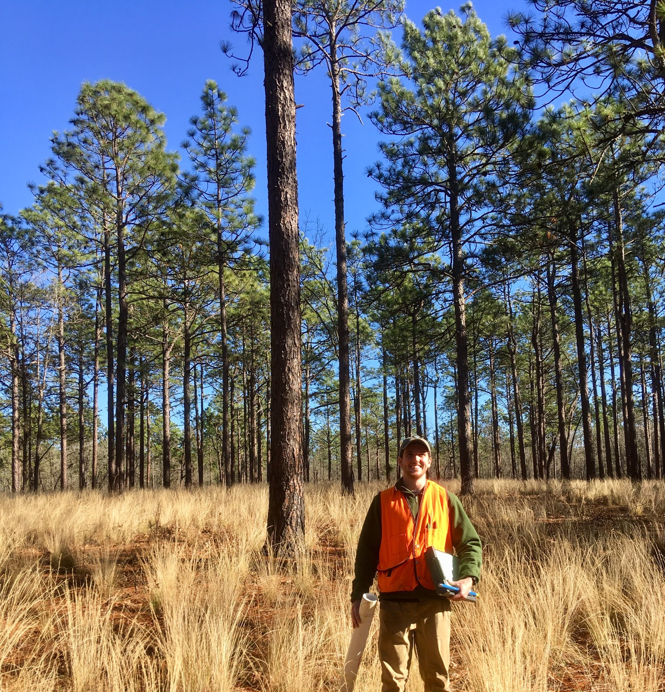

I am a Ph.D. student working with Dr. Paul Knapp in the Carolina Tree-Ring Science Laboratory at the University of North Carolina at Greensboro.
In my work I use tree-ring data to analyze historic variability in climate and weather. I am particularly interested in extracting specific precipitation data from tree rings. I am also interested in the influence of Atlantic ocean–atmosphere interactions on southeastern US hydroclimate.
A list of publications is available by visiting either my Google Scholar or ORCID profile. A current CV is available here.